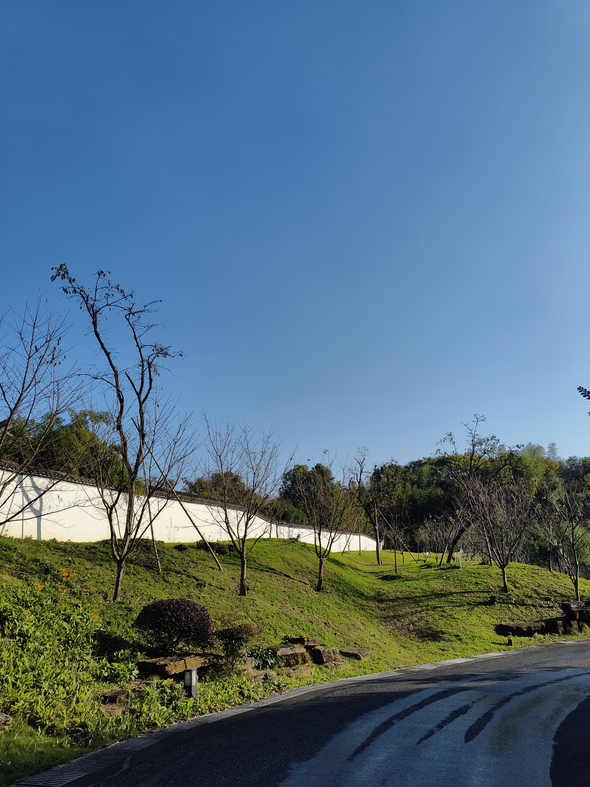

FILE_ID: ARCHIVE_01
LOCATION: Earth / [UNKNOWN_COORDINATES]
DESC: "The Edge". A wall, a slope, and an ordinary sunny day. Captured by a real human before the Great Collapse.
Awaiting further instructions